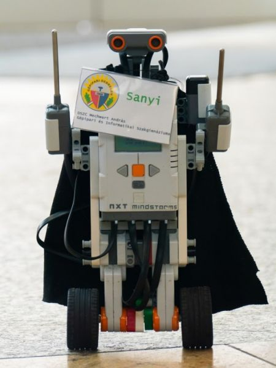

Nyílt napok iskolánkban
A héten ismerkedhettek meg a 8-osok iskolánk képzéseival.

Friss híreink
A héten ismerkedhettek meg a 8-osok iskolánk képzéseival.
A Magyar Telekom által tartott mai kötvényaukción:
Minden verseny kiváló eredményekkel zárul diákjaink részéről
Szeretettel várjuk nyílt napjainkra az érdeklődő szülőket és az általános iskolás diákokat! A nyílt napok időpontja és helye: 2021.11.22. (hétfő) 08:00 - Az iskola tornacsarnoka 2021.11.23. (kedd) 08:00 - Az iskola tornacsarnoka November 22-én (hétfőn) és november 23-án (kedden) 8 órakor az iskola tornacsarnokában várjuk az érdeklődő diákokat és szüleiket. A program vezetői tájékoztatóval indul, amely során bemutatjuk iskolánkat és információkat nyújtunk képzési kínálatunkról. A tájékoztató után természetesen örömmel válaszolunk majd minden felmerülő kérdésre. Ezután virtuális sétára invitáljuk a jelenlévőket, akik iskolánk tanműhelyeibe tekinthetnek be. A nyílt napon vállalati partnereinkkel is találkozhatnak. FONTOS! A nyílt napra előzetesen regisztrálni nem szükséges, azonban kérünk mindenkit, hogy az iskolában szíveskedjenek maszkot viselni! Online nyílt nap: 2021.11.24. 08:00 - Az iskola Facebook-oldala Azok számára, akik nyílt napjainkon nem tudnak személyesen részt venni, Facebook-oldalunkon videón keresztül mutatjuk be iskolánkat és képzési kínálatunkat. A videó természetesen visszanézhető lesz felületeinken, így a honlapunkon is. Szülői tájékoztató időpontja és helye: 2021.11.24. 16:00 - Az iskola padlástere A délutáni időpontban örömmel válaszolunk minden kedves szülő kérdésére. FONTOS! A szülői tájékoztatóra sem szükséges előzetesen regisztrálni, azonban kérjük Önöket, hogy az iskolában szíveskedjenek maszkot viselni!
Szakok